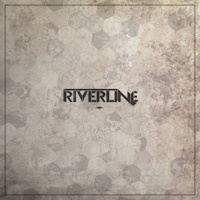

And To Hell Without Me?

Artist - Cristie
Shall We Begin Our Journey?
Hello, my dear listener!
Thank you for taking the time for me and my music. It's truly important to me that you listen and feel it.
Today, we'll dive together into the dark world of my album - To Hell and Without Me?
Yes, the album has two titles, that's not a mistake, it's a reference to the times of cassettes which had side A and side B, remember?)
Side A - the short version, is the album - And To Hell Without Me, and side B - is the full version of the album without restrictions, with bonus tracks.
My text today is the booklet for this album, explanations and revelations to the listener about what I felt when creating it, what I put into it, and what each track is about..
Right now, we'll ride the waves together, we'll start with quiet sadness, move to madness, revenge, and sail to euphoria. It will be interesting.
But first, what is this album about anyway?
It's about feelings, about internal struggle, freedom, rebirth, sadness, disappointment, and loneliness..
Sounds familiar, right?
You're probably wondering, did I put myself into it? Or are these just lines?
Of course, all the pain in my lyrics is my pain, it's how I feel and what I want to convey to the world, to you, to your heart.
So, shall we begin our journey?
1. Sad Demon, aka My Demon
The first track, Sad Demon, aka My Demon.
This is one of the most powerful tracks for me, it hits my soul so hard that I wake up at night from nightmares with flashbacks.
It's the story of a child's feelings who loved despite everything, tried, endured, looked for reasons in themselves, but couldn't cope with the burden of guilt. Guilt that became pain, hatred, a driving force that eventually completely changed me. I was in pain for years, but this pain made me. It cut me off from the old world and brought me to a new one that I'm building myself. It's painful, but necessary.
This track is a message that any pain can be overcome, you can be reborn, but it also reminds that we need to love our children.
It took me years to put all the pieces of the broken picture back together, and now my soul is like a glued broken stained glass window where some pieces will never be there again.
0:00
0:00
2. Phantasm's Mask
Sad, right?
Let's take a little break on our journey?
The second track, Phantasm's Mask or Phantasm. As a child, I loved superhero cartoons, Disney didn't appeal to me. But I could never understand why most female superheroes were so lame? Wonder Woman, Supergirl? But then, I watched an animated film that became my favorite forever. It's Batman: Mask of the Phantasm. My track is dedicated to the main character - Andrea Beaumont, who hides under the mask of Phantasm, a strong, brave character driven by revenge. A story of broken love, strong heroes, and melancholy in the end. I love that. I hope I managed to convey the atmosphere of this masterpiece in my track. By the way, it has a continuation, yes, this story doesn't end, you'll hear it soon, or maybe you already have?)
In any case, Andrea is forever in my heart.
0:00
0:00
3. Pennywise
 Well, rested? Next, we'll step into madness. I think you've already noticed that I love swings and my tracks are very different, there's sadness, melancholy, irony, trash, fun, humor, madness. I just love different things and can't stick to one style and direction, I'm different and my music is too.
Pennywise is a track representing the trash in my head. I love horrors, I love imagining myself in the place of main characters, maniacs, I'm always interested - what's in their heads? What drives them? Why did they become like that?
Pennywise is an experimental track, every time I think I can't do better, that it can't get darker and harsher, and then bam! And it works.
I love King's work, though not all of it, but I definitely love this book, and as you've noticed, I love dedicating tracks to my favorite works..
And I also love the darkness it turned out with, after listening to it, I want to reread the book..
Well, rested? Next, we'll step into madness. I think you've already noticed that I love swings and my tracks are very different, there's sadness, melancholy, irony, trash, fun, humor, madness. I just love different things and can't stick to one style and direction, I'm different and my music is too.
Pennywise is a track representing the trash in my head. I love horrors, I love imagining myself in the place of main characters, maniacs, I'm always interested - what's in their heads? What drives them? Why did they become like that?
Pennywise is an experimental track, every time I think I can't do better, that it can't get darker and harsher, and then bam! And it works.
I love King's work, though not all of it, but I definitely love this book, and as you've noticed, I love dedicating tracks to my favorite works..
And I also love the darkness it turned out with, after listening to it, I want to reread the book..
0:00
0:00
4. Good Night, Corpses!
 Well, now let's move to fun? How about irony and black humor?
Yes, we'll talk about - Good Night, Corpses! One of my favorite tracks!
How did it even come about? I adore memes! I love black humor and I really liked old TV series, like Streets of Broken Lights! How can you not love Dukalis? And their dance?
And the meme phrases with them?
The song is dedicated to a child of the 90s who lived in an environment of madness and chaos, but loved cartoons. But back then, what didn't they show? A child could watch any programs, I really remember how interesting it was to watch Criminal Russia, they show ADULTS there! Something serious! Interesting! Corpses! Crime!
Back then, parents didn't care what their child was watching, as long as they were occupied. This track is a mix of memes and the spirit of that time. Honestly, I don't like when the 90s are remembered with the vibe of hundred-dollar bills, Turbo gum, etc., and people get nostalgic. I wouldn't want to go back to that time, it's much better now.. But, it turned out well, I love this track, it's like the logo of VGTRK, the sponsor of my broken psyche!
Well, now let's move to fun? How about irony and black humor?
Yes, we'll talk about - Good Night, Corpses! One of my favorite tracks!
How did it even come about? I adore memes! I love black humor and I really liked old TV series, like Streets of Broken Lights! How can you not love Dukalis? And their dance?
And the meme phrases with them?
The song is dedicated to a child of the 90s who lived in an environment of madness and chaos, but loved cartoons. But back then, what didn't they show? A child could watch any programs, I really remember how interesting it was to watch Criminal Russia, they show ADULTS there! Something serious! Interesting! Corpses! Crime!
Back then, parents didn't care what their child was watching, as long as they were occupied. This track is a mix of memes and the spirit of that time. Honestly, I don't like when the 90s are remembered with the vibe of hundred-dollar bills, Turbo gum, etc., and people get nostalgic. I wouldn't want to go back to that time, it's much better now.. But, it turned out well, I love this track, it's like the logo of VGTRK, the sponsor of my broken psyche!
0:00
0:00
5. Circles
 Not bored yet? Let's move on.
Circles, surprisingly the most popular song of the album. I like it, but it came about by accident.
I'm constantly thinking about something, reflecting, and sometimes I record my thoughts. Sometimes I can't sleep and think a lot about eternal things, the meaning of life, why do I even exist? Who am I anyway? These thoughts go in circles. One of those nights I decided to glue my thoughts into lines and I liked the text, though I think it's not perfect, and probably even say it's transitional.. I had a suitable sample, I tried to sing it and something worked. I decided I'd finish what I started, even though it's not my most unambiguous composition. But you know, I liked it, I like the meaning I managed to put into it, despite its simplicity. And yes, the thought that someday I'll grow into a tree warms me, I'll pay tribute to nature..
Not bored yet? Let's move on.
Circles, surprisingly the most popular song of the album. I like it, but it came about by accident.
I'm constantly thinking about something, reflecting, and sometimes I record my thoughts. Sometimes I can't sleep and think a lot about eternal things, the meaning of life, why do I even exist? Who am I anyway? These thoughts go in circles. One of those nights I decided to glue my thoughts into lines and I liked the text, though I think it's not perfect, and probably even say it's transitional.. I had a suitable sample, I tried to sing it and something worked. I decided I'd finish what I started, even though it's not my most unambiguous composition. But you know, I liked it, I like the meaning I managed to put into it, despite its simplicity. And yes, the thought that someday I'll grow into a tree warms me, I'll pay tribute to nature..
0:00
0:00
6. Shadow
 Shadow. A difficult song, honestly. Very personal. Was written during a period of depression, when I had just been prescribed antidepressants, then a dead end came in my life, everything faded, I burned out.
You know, everything in your life is objectively good, you're loved, many would say there's nothing to be sad about, what's wrong with you? And I had emptiness. Just nothing inside. I just wanted to fall asleep and not wake up, because why? What do I feel? Nothing. I understood that I had to wake up just for others, but not for myself. I didn't feel sorry for myself, rather I was sad that others were suffering because of me, my emptiness, I was really like a robot, a doll without feelings. There was just no meaning. It was hard to get up, but I managed. It was in this state that these lines were written, and the track itself was recorded only a year later, I didn't have the desire to make it, and the text was written to figure out what was wrong with me and what I was feeling. Now I'm fine, this period is behind me, but I will always remember it, so as not to fall into this emptiness again.
Shadow. A difficult song, honestly. Very personal. Was written during a period of depression, when I had just been prescribed antidepressants, then a dead end came in my life, everything faded, I burned out.
You know, everything in your life is objectively good, you're loved, many would say there's nothing to be sad about, what's wrong with you? And I had emptiness. Just nothing inside. I just wanted to fall asleep and not wake up, because why? What do I feel? Nothing. I understood that I had to wake up just for others, but not for myself. I didn't feel sorry for myself, rather I was sad that others were suffering because of me, my emptiness, I was really like a robot, a doll without feelings. There was just no meaning. It was hard to get up, but I managed. It was in this state that these lines were written, and the track itself was recorded only a year later, I didn't have the desire to make it, and the text was written to figure out what was wrong with me and what I was feeling. Now I'm fine, this period is behind me, but I will always remember it, so as not to fall into this emptiness again.
0:00
0:00
7. Demon Inside or My Demon
 More sadness. But we'll be sad a little more. The next track is Demon Inside or My Demon.
This track can be called a sequel to Sad Demon, but it's about something else. It's about people, their feelings and personal traumas that we carry with us like luggage.
It's about self-sacrifice for others and about the consequences of actions we can't change, about choices that sometimes are made not by us, but by our traumas. Sometimes they guide us and make choices, not us. In the song, the heroine is torn in a choice, to cause pain or sacrifice herself? Accept the demon within or just leave, because when you don't care - it's easier.
And it's also a reference to the track Human by Rag'n'Bone Man, I like it, but not the original, once I heard a live performance by a street musician and it was much better, too bad I didn't have the courage to meet her. I never heard that version again and couldn't find it.
This song is about internal struggle and contradictions, about choice, to carry your luggage with you or maybe it's time to figure out what things you're dragging with you?
More sadness. But we'll be sad a little more. The next track is Demon Inside or My Demon.
This track can be called a sequel to Sad Demon, but it's about something else. It's about people, their feelings and personal traumas that we carry with us like luggage.
It's about self-sacrifice for others and about the consequences of actions we can't change, about choices that sometimes are made not by us, but by our traumas. Sometimes they guide us and make choices, not us. In the song, the heroine is torn in a choice, to cause pain or sacrifice herself? Accept the demon within or just leave, because when you don't care - it's easier.
And it's also a reference to the track Human by Rag'n'Bone Man, I like it, but not the original, once I heard a live performance by a street musician and it was much better, too bad I didn't have the courage to meet her. I never heard that version again and couldn't find it.
This song is about internal struggle and contradictions, about choice, to carry your luggage with you or maybe it's time to figure out what things you're dragging with you?
0:00
0:00
8. Baltika Play Queen
Enough sadness, break time.
Baltika Play Queen. I really love this song. It's light, fun, ironic, with references.
I love games! Really, I have many hours played! I love different games, from Morrowind, Mafia, Silent Hill, NFS Underground, Mass Effect, Dead Space, Postal 2, Vampire: The Masquerade Bloodlines - this is only a part.
I also love beer, but different ones, depending on my mood. And pies and sausages in dough - definitely my love!
So this song is an ironic caricature of me with an emphasis on humor and irony.
0:00
0:00
9. Careless or Reckless
 This track is my tribute to Freddie Mercury. I love Queen, and the song Careless Whisper. I wanted to make a track inspired by it, to convey this vibe in my style, in different languages. This song has two versions, I couldn't choose which is better and kept both. I think I did pretty well.
This track is my tribute to Freddie Mercury. I love Queen, and the song Careless Whisper. I wanted to make a track inspired by it, to convey this vibe in my style, in different languages. This song has two versions, I couldn't choose which is better and kept both. I think I did pretty well.
0:00
0:00
10. Euphoria (Love Euphoria)
 Ah, sadness again. Euphoria. That's it.
The song was written on emotions during a period when my friends' families started falling apart, for various reasons. You know, I have a trigger for that, for divorces, betrayals. It was hard for me to understand why men cheat, leave children alone in their difficult time, because I went through that myself, I remember how bad it is to be a child who is being divided, and each tries to prove they're right, and the other is your enemy. There were many divorces, one after another, similar situations. The situation was worsened by social media where I read similar stories, it all caused a storm of emotions.
So the track Euphoria is about emotions, not mine, but of all those who were left, abandoned. How I felt it and how I conveyed it. But remember, any pain passes, another wave may be the last and calm will come.
Ah, sadness again. Euphoria. That's it.
The song was written on emotions during a period when my friends' families started falling apart, for various reasons. You know, I have a trigger for that, for divorces, betrayals. It was hard for me to understand why men cheat, leave children alone in their difficult time, because I went through that myself, I remember how bad it is to be a child who is being divided, and each tries to prove they're right, and the other is your enemy. There were many divorces, one after another, similar situations. The situation was worsened by social media where I read similar stories, it all caused a storm of emotions.
So the track Euphoria is about emotions, not mine, but of all those who were left, abandoned. How I felt it and how I conveyed it. But remember, any pain passes, another wave may be the last and calm will come.
0:00
0:00
Side B
 Phew! We've gone through the first part of the album, part A, but there's still part B ahead.
Ready? Not tired? Pour some tea and get ready, there's not much left..
Phew! We've gone through the first part of the album, part A, but there's still part B ahead.
Ready? Not tired? Pour some tea and get ready, there's not much left..
11. Sad Demon (alternative version)
 Side B begins with an alternative version of Sad Demon.
It came about by accident, it was an experiment, its alternative vision.
I wondered, can this pain be conveyed with a different shade?
As a result, I kept it, I hope you like it..
Side B begins with an alternative version of Sad Demon.
It came about by accident, it was an experiment, its alternative vision.
I wondered, can this pain be conveyed with a different shade?
As a result, I kept it, I hope you like it..
0:00
0:00
12. Careless (alternative version)
 Also on side B there's an alternative version of Careless.
Yes, again I couldn't choose the better version and kept both)
Also on side B there's an alternative version of Careless.
Yes, again I couldn't choose the better version and kept both)
0:00
0:00
Covers
Next, we have covers, let me tell you about each one, why I chose them?
13. Elements (Riverline Cover)

Elements. A song by the undeservedly little-known band Riverline.
When I first heard them, I was amazed at how similar they sound to Linkin Park!
Not in vocals, no, it's not about that, but in spirit!
The guys did a great job! My cover is a tribute to their project and their idea to dedicate an album to Linkin Park.
0:00
0:00
14. Numb (Linkin Park Cover)
 Numb. What can I add here?
Linkin Park are my inspirers, how can you not love Chester, his vocals, lyrics, and his pain?
I think their work is an engine that at one time gave me a push towards music!
And I can listen to them endlessly. But, I really like the text of this song translated by AI MORI, and since my favorite language is Russian, I couldn't sing it differently.
In this version, there's an Easter egg, there are two of my vocals, yes, I'm nowhere near Chester, but I like my attempt.
Numb. What can I add here?
Linkin Park are my inspirers, how can you not love Chester, his vocals, lyrics, and his pain?
I think their work is an engine that at one time gave me a push towards music!
And I can listen to them endlessly. But, I really like the text of this song translated by AI MORI, and since my favorite language is Russian, I couldn't sing it differently.
In this version, there's an Easter egg, there are two of my vocals, yes, I'm nowhere near Chester, but I like my attempt.
0:00
0:00
15. Parasite (Banshee Cover)
 Parasite. I think Banshee is wildly underrated!
Just listen to how she screams! It's magnificent!
Yes, the text is simple, but damn deep!
I like in this track the combination of physical pain and mental suffering, how you lose your identity!
Anger, pain, loss, hopelessness. Definitely my vibe.
Parasite. I think Banshee is wildly underrated!
Just listen to how she screams! It's magnificent!
Yes, the text is simple, but damn deep!
I like in this track the combination of physical pain and mental suffering, how you lose your identity!
Anger, pain, loss, hopelessness. Definitely my vibe.
0:00
0:00
16. Crash (DeathbyRomy Cover)
 Crash. DeathbyRomy is definitely cool!
Not only in music, visuals, and lyrics.
Everything she does is imbued with pain and suffering - no happy endings!
For me, that's perfect.
In this track, I like the atmosphere. Accident, water, inevitability, acceptance, enjoyment, culmination.
It's just beautiful. And yes, I added a bit of myself by singing in Russian and Japanese.
Crash. DeathbyRomy is definitely cool!
Not only in music, visuals, and lyrics.
Everything she does is imbued with pain and suffering - no happy endings!
For me, that's perfect.
In this track, I like the atmosphere. Accident, water, inevitability, acceptance, enjoyment, culmination.
It's just beautiful. And yes, I added a bit of myself by singing in Russian and Japanese.
0:00
0:00
17. Collector (Deadushki Cover)
 Collector. Deadushki and their OST for the game Nuclear Titbit, those who remember know!
And those who don't, please don't google it! Don't break your psyche!
Although, if you're already here, I think there's no point in talking you out of it)
What can I say, the song has a very deep text, for me that's the most important thing!
What is it about? Hard to say, about a butterfly or not?
I'm sure everyone will find something of their own in it.
Collector. Deadushki and their OST for the game Nuclear Titbit, those who remember know!
And those who don't, please don't google it! Don't break your psyche!
Although, if you're already here, I think there's no point in talking you out of it)
What can I say, the song has a very deep text, for me that's the most important thing!
What is it about? Hard to say, about a butterfly or not?
I'm sure everyone will find something of their own in it.
0:00
0:00
Thank You for Listening
Thank you so much for reading and diving with me into my stream of thoughts. I am very grateful to you for listening. Your feedback on my tracks is the biggest gratitude. Thank you! I really hope that my music helped you, I don't know what emotions you experienced, but maybe we were on the same wavelength. You know, music helps, I hope I helped you, all of you. What's next? Believe me, it will be interesting, right now I'm preparing new material! And so you don't get bored, you can always listen to me here, there's always everything new.